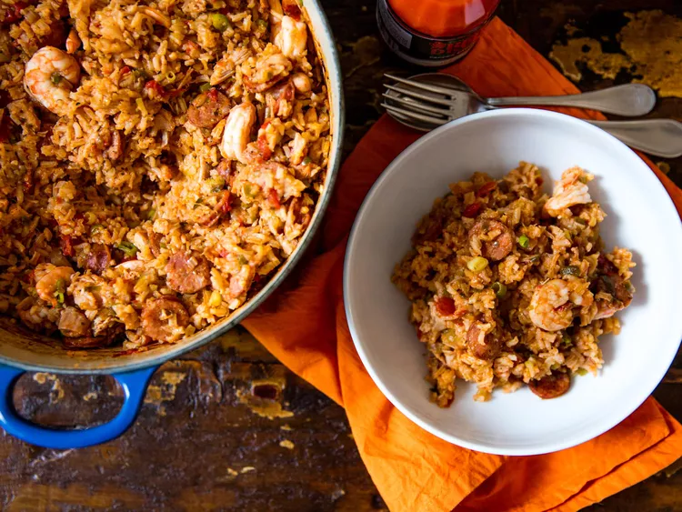

Jambalaya

Jambalaya is one of my all time favorite foods. Quick and easy to whip up and a definite crowd pleaser. Original recipe sourced from Serious Eats.
Ingredients
- 1 (28-ounce; 795g) can peeled whole tomatoes, packed in juice
- About 3 cups (720ml) homemade chicken stock or low-sodium store-bought broth, plus more as needed
- 1 1/4 pounds (565g) boneless, skinless chicken thighs
- Kosher salt and freshly ground black pepper
- 1 tablespoon (15ml) vegetable, canola, or other neutral oil, plus more if needed
- 3/4 pound (340g) cooked Cajun or Creole sausage, such as andouille or chaurice (or other similar smoked or spiced pork sausage), sliced into thin rounds
- 1 medium yellow onion (8 ounces; 225g), diced
- 2 medium green bell peppers (10 ounces total; 280g), stemmed, seeded, and diced
- 4 celery ribs (6 ounces total; 170g), diced
- 4 medium cloves garlic, minced
- 1 teaspoon (5ml) tomato paste
- 1 tablespoon (15ml) Louisiana-style hot sauce, plus more for serving
- 2 teaspoons minced fresh thyme leaves or 1 teaspoon dried thyme
- 1 teaspoon dried oregano
- 1/4 teaspoon cayenne pepper, or to taste
- 1/4 teaspoon garlic powder
- 2 bay leaves
- 2 cups long-grain rice (12 ounces; 370g)
- 3/4 pound (340g) peeled and deveined shrimp
- 6 scallions, white and light green parts only, thinly sliced
Instructions
- Strain tomatoes and add juice to a 4-cup measuring cup. Place tomatoes in a medium bowl. Using your fingers, carefully tear each tomato open to release the liquid inside its seed compartments. Strain all this liquid into measuring cup. Crush tomatoes well with your hands. Add enough chicken stock to tomato juices to total 4 cups (960ml). Set aside.
- Preheat oven to 325°F (160°C). Season chicken all over with salt and pepper. In a Dutch oven, heat oil over medium-high heat until shimmering. Add chicken and cook, turning, until browned on both sides, about 6 minutes per side. Transfer chicken to a cutting board and let rest for 5 minutes, then cut into 1/2-inch chunks and set aside.
- Meanwhile, add sausage to Dutch oven and cook, stirring often, until just starting to darken, about 3 minutes; lower heat and/or add oil at any point to prevent burning. Add onion, bell pepper, celery, and garlic and cook, stirring and scraping bottom of Dutch oven, until browned bits have come loose and vegetables just begin to turn lightly golden, about 8 minutes.
- Stir in tomato paste and cook, stirring, until lightly browned, about 1 minute. Add hot sauce, thyme, oregano, cayenne, garlic powder, and a very generous dose of black pepper. Add crushed tomatoes, tomato/stock mixture, diced chicken, and bay leaves and bring to a simmer. Season with salt, tasting liquid to ensure it is well seasoned.
- Stir in rice and return to a simmer. Cover with lid and transfer to oven. Bake until liquid is fully absorbed and rice is tender, about 40 minutes.
- Gently stir in shrimp and scallions and return to oven until shrimp are just cooked through, about 5 minutes. Cover pot and let rest 15 minutes. Remove bay leaves, if desired (see note).
- Serve, passing hot sauce at the table for diners to add to taste.